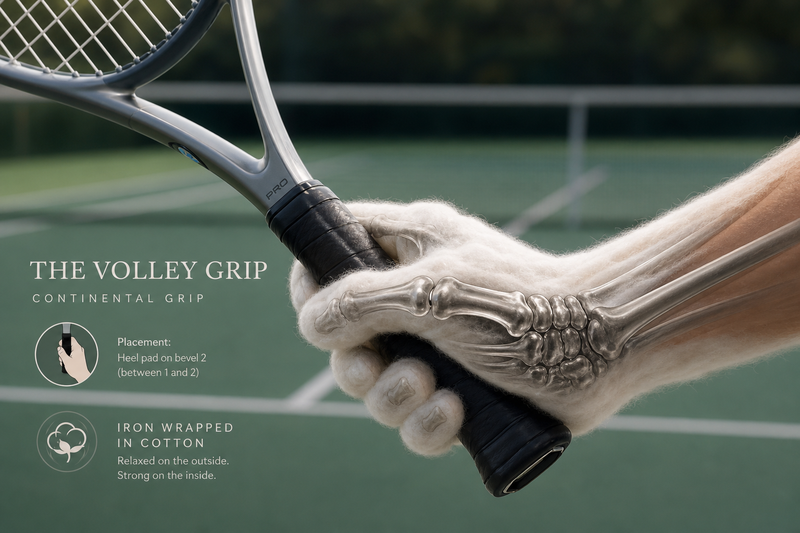
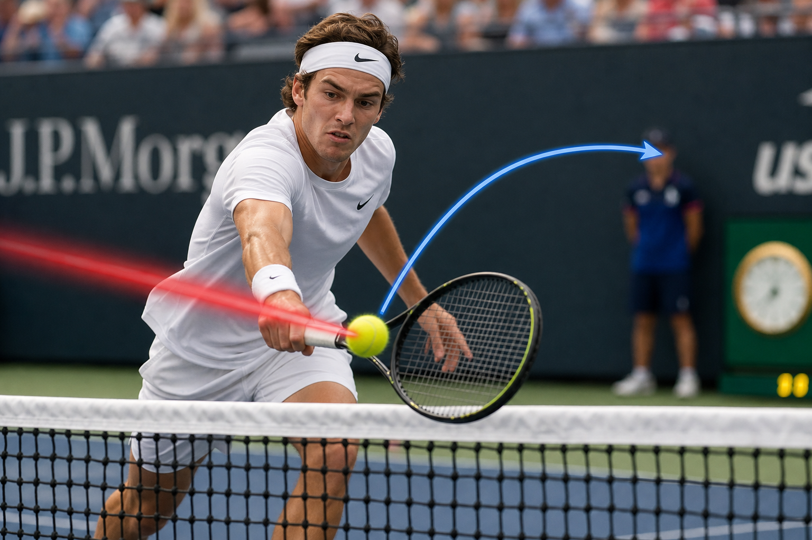

The_Art_of_Redirection_Taichi_Principles_in_the_Tennis_Volley¶
The Art of Redirection: Taichi Principles in the Tennis Volley
Author: Manus AI
Introduction
The tennis volley, often described as a shot of touch and deflection rather than raw power, shares profound conceptual and biomechanical similarities with core principles found in Taichi. This analysis integrates fundamental Taichi concepts such as Fang Song (loosening), Ting Jin (listening energy), and specifically the U-shape and L-shape frame structures between the forearm and racquet, to master the volley as a sophisticated redirection of force.
1. The Volley Grip: A Foundation of Sensitivity
The Volleygrip.md document emphasizes that a volley is not a swing but a redirection [1]. This requires a grip that is not fully compressed, allowing for \"mini-movements\" of the handle.
Fang Song (放松): The Art of Relaxed Power
In Taichi, Fang Song (放松) is the principle of releasing unnecessary muscular tension while maintaining structural integrity, often described as \"iron wrapped in cotton\" [2].

Connection to Volley: A loose grip (3-4/10 pressure) allows the racquet head to give slightly on impact, lengthening contact time and lowering peak force. This enables the player to \"bleed off pace instead of reflecting it,\" effectively absorbing the ball's energy and facilitating redirection [1].
Ting Jin (聽勁): Sensing the Ball
Ting Jin (聽勁), or \"listening energy,\" is the ability to sense and interpret force through touch [3].

Connection to Volley: The thumb and index finger act as \"feelers,\" providing tactile feedback about the ball's impact. This sensitivity allows for last-second micro-adjustments, enabling the player to \"feel the ball on the strings\" and steer it with precision [1].
2. Structural Archetypes: U-Shape and L-Shape
According to the volley.md document, maintaining specific geometric frames between the forearm and racquet is key for stability and control [5].
The U-Shape: Preparation Frame
The U-shape frame is formed at the end of the backswing. The forearm acts as the base of the U, while the upper arm and the racquet form the two sides.

Application and Taichi Connection: This structure helps keep the swing compact and the racquet within the field of vision. In Taichi, this corresponds to the \"Embrace the Moon\" posture, creating an elastic, rounded frame that helps maintain structural integrity and a wide field of awareness [5].
The L-Shape: Stability Frame
The L-shape refers to the stable 90-degree angle between the forearm and the racquet handle, particularly important in the backhand volley.

Application and Taichi Connection: The L-shape creates an \"L-Shape Lock\" that helps withstand high-velocity shots. It ensures the racquet head stays up, aligning the racquet's center of mass with the forearm's axis to prevent twisting upon impact. In Taichi, this is an expression of using skeletal structure rather than muscles to absorb force [5].
3. Footwork: Substantial and Insubstantial
Taichi footwork is governed by the principle of Xu Shi (虚实), or distinguishing between \"substantial\" (full/weighted) and \"insubstantial\" (empty/unweighted) legs [4].
The Cat Walk and Weight Transfer
Modern volleying relies on linear momentum. The player pushes off the back leg (substantial) and steps forward with the front leg (insubstantial to substantial transition) at the moment of ball contact.

Gravity Step: For low volleys, instead of just bending at the waist, the player uses a \"Gravity Step\" to lower the entire body platform (including the head and hitting frame). This helps maintain the \"L-Shape Lock\" and eliminates parallax error, allowing the eyes to look directly at the contact zone [5].
4. Movement Dynamics: Redirection via the Waist
In Taichi, Lu Jin (捋勁) is the energy used to yield to and redirect an opponent's force [2, 3].

Tennis Application: The volley is the ultimate expression of Lu Jin. By using a stable structural frame (U and L shapes) combined with a soft hand (Fang Song), the player doesn't need to generate new power but merely \"borrows\" the opponent's force to guide the ball as desired [1, 5].
Conclusion
Mastering the modern volley goes beyond just hand technique; it is a seamless integration of body structure and internal principles. By maintaining the U-shape and L-shape frames, combined with Xu Shi footwork and the Fang Song state, players can transform powerful opponent shots into artistic and effective redirections of energy.
References
[1] Volleygrip.md. (n.d.). User-provided document.\ [2] Earth Balance Tai Chi. (2021, July 10).Fang Song in Tai Chi | Relax the muscles | Loosen the joints. https://earthbalance-taichi.com/2021/07/fang-song-in-tai-chi/ [3] Clear Tai Chi. (n.d.). The #1 Most Important Skill In Tai Chi & All Internal Arts. https://www.cleartaichi.com/chi-energy-blog/ting-jing-listening-energy-1134.html [4] Open the Door to Tai Chi. (n.d.). Beginner Tai Chi: 'Substantial and Insubstantial'. https://www.youtube.com/watch?v=PZoNiRrUUxs [5] volley.md. (n.d.). User-provided document (Modern Tennis Volley Handbook 2026).